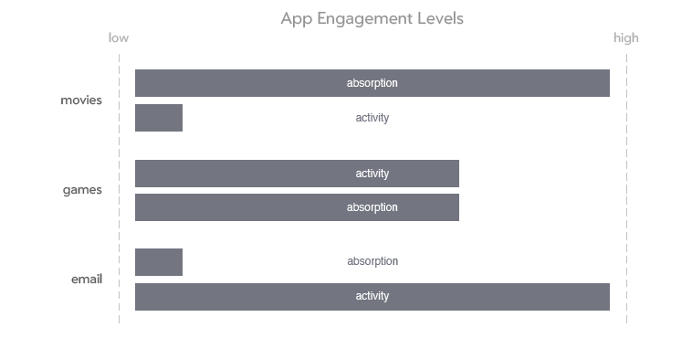
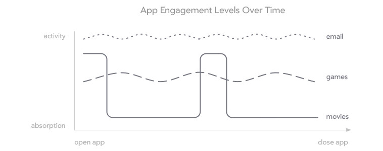

The Big Picture
Welcome to the growing community of designers working with Moonstone and webOS. Before you dive into the details of your design, it is important to have a clear understanding of the end users, their expectations of TV, and how the remote control allows them to interact with the TV. How are the users’ experiences, expectations, and interactions different on the TV than in the mobile and desktop environments? Our research into these questions led to the formulation of the webOS Design Principles; these principles, in turn, have informed the design of the webOS System UI, Enyo/Moonstone Framework, and Design Pattern Language, creating a foundation for successful application development on TV. Read the following sections to gain a better understanding of the big picture.
Application Types
Is your goal to provide a highly immersive full screen video experience, an interactive social or communication experience, a well curated one-click shopping experience, or an intricate production tool? The following categories and examples will help you to identify the type of application you are designing and determine whether it is appropriate for TV.
Content
Video, music, and photo applications are the most appropriate apps for TV. They take advantage of the large-screen shared device in a way that users are familiar with and have come to expect.
Examples of content consumption apps include Live TV, Netflix, Pandora, and Instagram.
Social Communication
Social communication applications have become a new favorite on the TV, providing a large-screen experience for connecting with friends and family, and redefining how users interact with their TVs.
Examples of social communication apps include Skype, Google Hangouts, Twitter, Facebook, instant messaging, and VoIP calling.
Shopping
Shopping applications on TV are an excellent opportunity for e-commerce, but the activity can easily become too cumbersome to be enyoyable. Take advantage of the full screen by displaying large and beautiful product images; make purchasing or downloading a simple, one-click experience. Avoid complicated shopping options.
Examples of shopping apps include the App Catalog, Amazon, Fancy, PayPal, and food ordering.
Productivity
Productivity applications are usually the least appropriate for the TV. They are inherently Lean Forward experiences requiring complex interactions that are incompatible with both the input method (i.e., the remote control) and the user’s expectations of a TV-based experience.
Examples of productivity apps are email clients, Microsoft Excel, and Adobe Photoshop.
Engagement Styles
The user’s engagement style is defined by the level of absorption vs. the level of activity.
In a high-absorption experience, the user is either passive or thoughtful over a long period of time. Engagement with long-form media such as movies and novels is typically associated with the highest levels of absorption.
By contrast, in a high-activity experience, the user switches tasks frequently, exhibiting a relatively low level of sustained attention. Web browsing and checking email are commonly characterized by a high level of activity.
It is also possible for a single experience to have relatively high levels of both activity and absorption (e.g., when playing a game).

The setting, conditions, and environment that users are accustomed to for a particular engagement style can influence their expectations of, and levels of comfort with, specific devices and application experiences. For example, users may reject the idea of engaging in high-activity experiences (such as checking email) while sitting in front of the TV in their living room–if they associate that environment with high-absorption engagement.

The level of user engagement with an application may also change over time. The image above identifies a movie application as being high-absorption and low-activity. However, when first opening a movie application, the user may want or need to find a new movie to watch. During this time, the level of activity is high and the level of absorption is low. Once the user finds a movie to watch, these levels switch. The user quickly becomes absorbed, and the level of activity remains low until the movie is over.